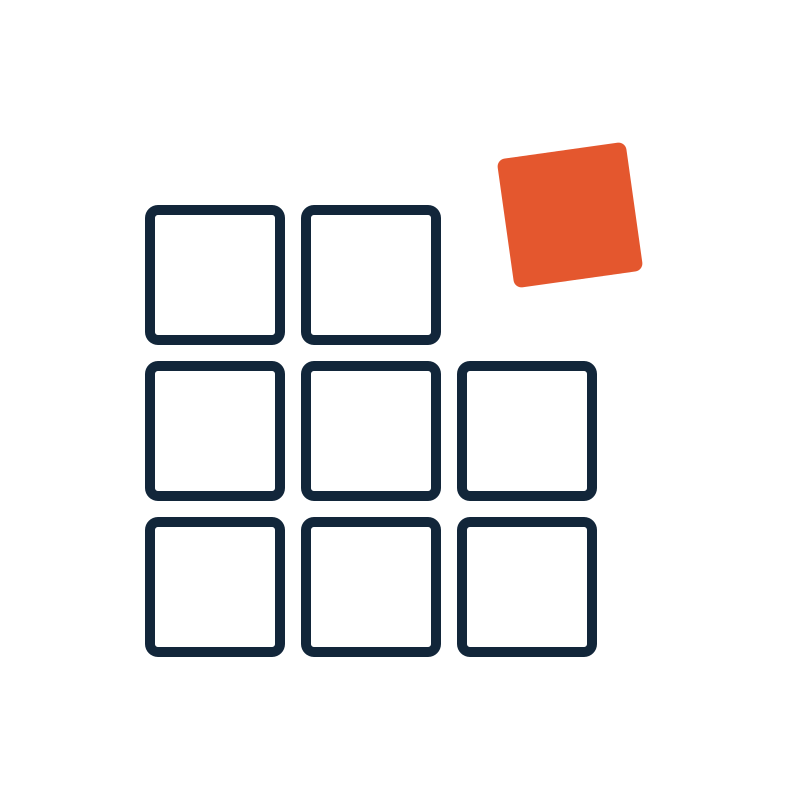

API demo
The full functional API on one page: detect, scan, extract a point, export a bbox grid, and trim a file — with live JSON output.
Open API demo →
SciWrid ToolkitWebAssembly geospatial toolkit
GRIB2, NetCDF, Zarr and GeoTIFF through one mental model: scan a file, pull a point or an area, render it on a map, or trim it down — no server, no Python.
Choosing your pathway
The two questions that branch the API: point or area? and object or file-ready output?
Try it
Drop one of your own files (or a fixture from examples/testfile/) into any demo.
The full functional API on one page: detect, scan, extract a point, export a bbox grid, and trim a file — with live JSON output.
Open API demo →Render any file onto a MapLibre basemap with a color ramp, then click the map to read back the underlying value. Worker-offloaded.
Open map demo →A minimal copy-paste page showing the class-based SciWridToolkit API — load a file once and reuse it across queries.